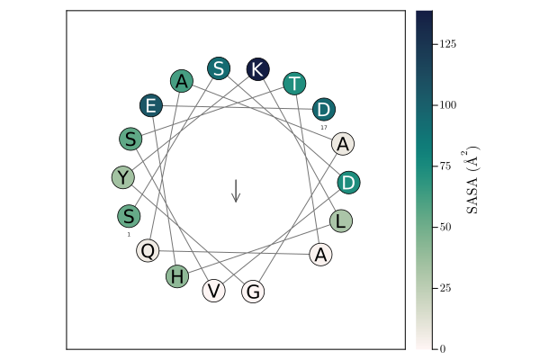

Helical wheels
A helical wheel is a projection of an α-helix along its axis. Consecutive residues are separated by 100° (3.6 residues per turn), so residues that face the same side of the helix appear next to each other in the wheel. Coloring the residues by a per-residue property shows at a glance which face of the helix carries that property, for example, which face interacts with the membrane, the solvent or another protein.
Drawing a helical wheel
helical_wheel receives the sequence of the helix (one-letter codes) and one value per residue, in the same order. Any property can be used: coordination numbers, SASA, RMSF, interaction energies, conservation scores, etc. The resulting HelicalWheel is plotted with plot (Plots must be loaded):
using PDBTools, Plots
sequence = "LKKLLKLLKKLLKL"
values = [1.0, 0.1, 0.2, 0.9, 0.8, 0.1, 0.7, 1.0, 0.2, 0.1, 0.9, 0.8, 0.2, 0.9]
wheel = helical_wheel(sequence, values)HelicalWheel of 14 residues (1-14): LKKLLKLLKKLLKL
Mean hydrophobicity: 0.5471428571428572
Hydrophobic moment: 0.8131864829616079plot(wheel; colorbar_title = "property")The HelicalWheel contains the mean hydrophobicity of the helix and its hydrophobic moment, in the mean_hydrophobicity and μ fields:
wheel.μ0.8131864829616079Some details of the drawing:
- the residues are placed at 100° from each other; after 18 residues (5 turns) a new ring starts, with a larger radius, so that long helices do not overlap;
- the arrow is the hydrophobic moment, and the wheel is rotated so that it always points down: the hydrophobic face of the helix is at the bottom of the figure;
- the first and last residues are labeled with their residue numbers (keyword
residue_numbersofhelical_wheel); - by default the values are normalized to
[0, 1](normalize = true). To compare several helices on the same color scale, usenormalize = falseand fix the limits withclims.
Per-residue values
The values of the residues are the input of the helical wheel, and can come from any source, as long as there is one value per residue, in the order of the sequence.
Here, we compute the solvent accessible surface area (SASA) of the atoms of a protein, and the SASA of each residue of an α-helix of the protein (residues 13 to 29):
using LazyArtifacts
pdb = read_pdb(PDBTools.test_file("structure.pdb"), "protein")
atomic_sasa = sasa_particles(pdb)
helix = select(pdb, "resnum >= 13 and resnum <= 29")
values = [ sasa(atomic_sasa, at -> residue(at) == residue(r)) for r in eachresidue(helix) ]17-element Vector{Float32}:
52.874367
93.366135
73.762695
⋮
105.748886
95.14345sequence = join(oneletter.(resname.(eachresidue(helix))))
plot(helical_wheel(sequence, values); normalize = false, colorbar_title = "SASA (Å\$^2\$)")
The buried face of the helix, which packs against the rest of the protein, is at the bottom.
Values computed by other packages can be used as well. For example, with a ResidueContributions object rc from ComplexMixtures.jl, the contribution of each residue to the solvation of the protein at a distance d is:
id = findfirst(>=(d), rc.d)
values = [rc.residue_contributions[i][id] for i in eachindex(rc.residue_contributions)]
plot(helical_wheel(sequence, values); colorbar_title = "CN")From a structure
With a selection of atoms (of a single chain), the sequence, the residue numbers and the values are taken from the structure itself. The values are computed from a per-atom property (property, by default the beta field of the atoms), combined for each residue by aggregate, as aggregate(property, residue):
- use
aggregate = sumfor additive properties, such as the SASA, or atomic contributions to a coordination number; - use the mean (default) for intensive properties, such as B-factors or RMSF.
Residues (and chains, segments, models and structures) are vectors of atoms, such that aggregate(property, residue) is, for example, sum(beta, residue) or mean(beta, residue) (with using Statistics).
Per-atom values computed by other programs are often stored in the beta column of PDB files. Here, we store the SASA of each atom in the beta field of the atoms, and the helical wheel above is obtained directly from the helix:
for (i, atom) in enumerate(pdb)
atom.beta = atomic_sasa[i] # SASA of atom i (the atoms of helix are those of pdb)
end
wheel = helical_wheel(helix; aggregate = sum)
plot(wheel; normalize = false, colorbar_title = "SASA (Å\$^2\$)")The property keyword selects another per-atom property, for example property = occup for the occupancy column. The first and last residues are labeled with their residue numbers in the structure.
Hydrophobic moment and mean hydrophobicity
hydrophobic_moment computes the hydrophobic moment (Eisenberg) of a sequence, without drawing, as a 2D vector, whose magnitude is the amphipathicity of the helix:
m = hydrophobic_moment("LKKLLKLLKKLLKL")2-element StaticArraysCore.SVector{2, Float64} with indices SOneTo(2):
0.5974168932836933
0.5516931318139909hypot(m...)0.8131864829616079mean_hydrophobicity computes the mean hydrophobicity of the residues of a sequence:
mean_hydrophobicity("LKKLLKLLKKLLKL")0.5471428571428572The default hydrophobicity scale is that of Fauchère & Pliska (1983)[1]. Another scale can be given as a dictionary from one-letter codes to values, with the hydrophobicity keyword of hydrophobic_moment, mean_hydrophobicity and helical_wheel.
Reference
PDBTools.helical_wheel — Function
helical_wheel(sequence, values; residue_numbers = 1:length(sequence), hydrophobicity)
helical_wheel(atoms; property = beta, aggregate = mean, hydrophobicity)Compute the helical wheel of a helix, with one value per residue. The values can be any per-residue property (coordination number, SASA, RMSF, interaction energy, conservation, etc.), in the same order as the sequence.
Returns a HelicalWheel, which can be plotted with plot(wheel) (requires using Plots).
With a vector of atoms (of a single chain), the sequence, the residue numbers and the values are taken from the structure: the value of each residue is aggregate(property, residue), that is, property is computed for each atom and combined for the residue with aggregate:
property: function applied to each atom (default:beta; can beoccup,charge, etc.).aggregate:sumfor additive properties (e.g. atomic contributions to a coordination number), or the mean (default) for intensive properties (B-factor, RMSF). Any function with theaggregate(f, collection)form can be used, assum,maximum,minimum, ormean(fromStatistics).
The mean hydrophobicity and the hydrophobic moment are computed with the scale given by hydrophobicity (default: Fauchère & Pliska, 1983; see mean_hydrophobicity and hydrophobic_moment).
Examples
julia> using PDBTools, LazyArtifacts, Plots
julia> wheel = helical_wheel("LKKLLKLLKKLLKL", rand(14));
julia> plot(wheel; colorbar_title = "property")
julia> pdb = read_pdb(PDBTools.test_file("structure.pdb"), "protein");
julia> helix = select(pdb, "resnum >= 13 and resnum <= 29"); # an α-helix
julia> plot(helical_wheel(helix; property = mass, aggregate = sum); colorbar_title = "mass")Values from other packages can be passed directly. For example, with a ResidueContributions object rc of ComplexMixtures.jl, the contribution of each residue at distance d is:
id = findfirst(>=(d), rc.d)
values = [rc.residue_contributions[i][id] for i in eachindex(rc.residue_contributions)]
wheel = helical_wheel(sequence, values)PDBTools.HelicalWheel — Type
HelicalWheelHelical wheel of a helix, with one value per residue, as returned by helical_wheel. Plot it with plot(wheel) (requires using Plots).
Fields
sequence: sequence of the helix (one-letter codes).values: one value per residue.residue_numbers: the residue numbers.mean_hydrophobicity: the mean hydrophobicity of the helix (seemean_hydrophobicity).μ,μx,μy: the magnitude and the components of the hydrophobic moment of the helix (seehydrophobic_moment).
RecipesBase.plot — Method
plot(wheel::HelicalWheel; kwargs...)Plot a helical wheel, as computed by helical_wheel, with each residue colored by its value.
Keyword arguments
normalize = true: apply min-max normalization of the values to[0, 1].colormap = :tempo: color map of the values.colorbar_title = "": title of the color bar.clims = nothing: fixed limits of the color scale, e.g.(0, 1). Use (withnormalize = false) to compare several helices on the same scale.show_moment = true: draw the arrow of the hydrophobic moment.
The residues are placed at 100° from each other; after 18 residues (5 turns) a new ring starts, with a larger radius. The wheel is rotated such that the hydrophobic moment points down. The first and last residues are labeled with their residue numbers.
Example
julia> using PDBTools, Plots
julia> wheel = helical_wheel("LKKLLKLLKKLLKL", rand(14));
julia> plot(wheel; colorbar_title = "property")PDBTools.hydrophobic_moment — Function
hydrophobic_moment(sequence; hydrophobicity = Fauchère-Pliska scale)Compute the hydrophobic moment (Eisenberg) of an α-helix with the given sequence (one-letter codes), assuming 100° between consecutive residues.
Returns the moment per residue, as a 2D vector (μx, μy), in the plane perpendicular to the axis of the helix. Its magnitude, hypot(moment...) (or norm(moment), from LinearAlgebra), is the amphipathicity of the helix.
The default hydrophobicity scale is that of Fauchère & Pliska (1983). Another scale can be given as a dictionary from one-letter codes (Char) to values.
See also mean_hydrophobicity.
Example
julia> using PDBTools
julia> m = hydrophobic_moment("LKKLLKLLKKLLKL");
julia> round(hypot(m...); digits = 2)
0.81PDBTools.mean_hydrophobicity — Function
mean_hydrophobicity(sequence; hydrophobicity = Fauchère-Pliska scale)Compute the mean hydrophobicity of the residues of the given sequence (one-letter codes).
The default hydrophobicity scale is that of Fauchère & Pliska (1983). Another scale can be given as a dictionary from one-letter codes (Char) to values.
See also hydrophobic_moment.
Example
julia> using PDBTools
julia> mean_hydrophobicity("LKKLLKLLKKLLKL")
0.5471428571428572- 1J. Fauchère and V. Pliska, Hydrophobic parameters π of amino-acid side chains from the partitioning of N-acetyl-amino-acid amides, Eur. J. Med. Chem. 18, 369-375 (1983).